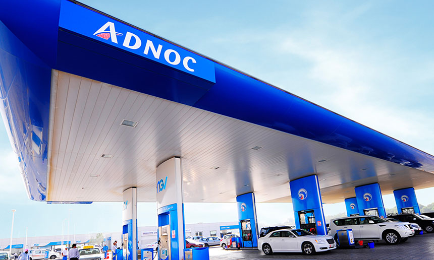
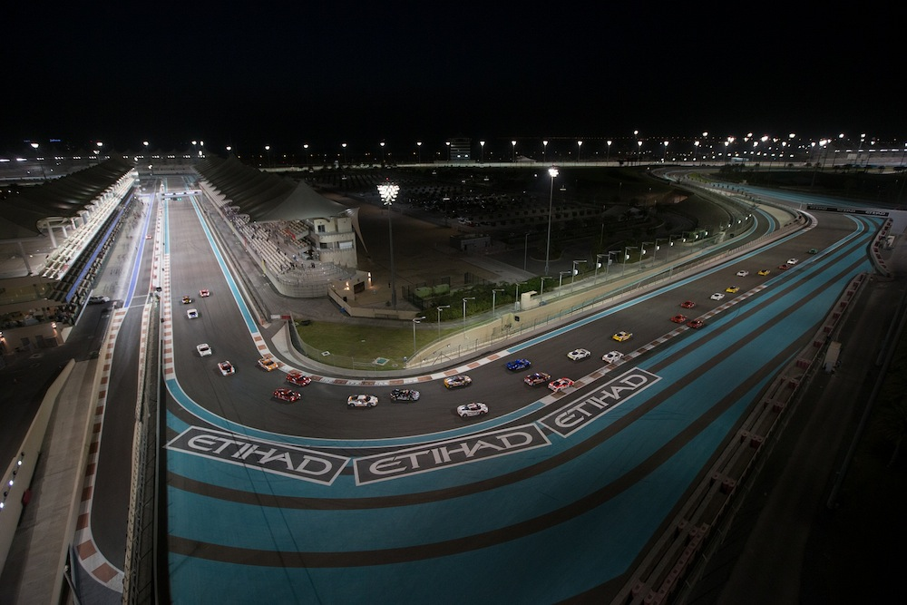

Sheikh Zayed Grand Mosque (Arabic: جامع الشيخ زايد الكبير) is located in Abu Dhabi, the capital city of
the United Arab Emirates, and is considered to be the key site for worship in the country.

The Yas Marina Circuit (Arabic: حلبة مرسى ياس) is the venue for the Abu Dhabi Grand Prix. The circuit was
designed by Hermann Tilke, and is situated on Yas Island, about 30 minutes from the capital of the UAE, Abu
Dhabi.

Zayed National Museum (Arabic: متحف زايد الوطني) is a planned museum, to be located in Abu Dhabi, UAE. It
will be built on Saadiyat Island. The museum will be the centrepiece of the Saadiyat Island Cultural
District and will showcase the history, culture and more recently the social and economic transformation of
the Emirates.

The Louvre Abu Dhabi is a planned museum , to be located in Abu Dhabi , UAE. Artwork from around the world
will be showcased at the museum, with particular focus placed upon bridging the gap between Eastern and
Western art.

Ferrari World Abu Dhabi is an amusement park located on Yas Island in Abu Dhabi, United Arab Emirates. It
is the first Ferrari-branded theme park and has the record for the largest space frame structure ever built.
Formula Rossa, the world's fastest roller coaster, is also located here.